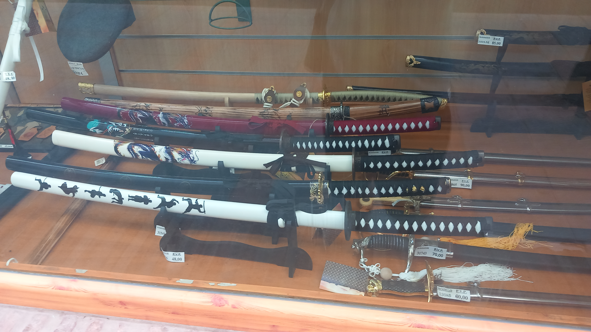
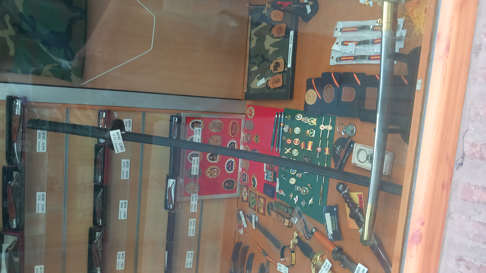

Un bastón de madera nacido en el campo y un sable forjado durante semanas para la casta guerrera. El Bo y la Catana no podrían venir de mundos más distintos, pero las dos enseñan la misma lección de fondo: la técnica sin control no sirve de nada.
El Bo: la herramienta que se volvió arma
El Bo es un bastón de madera, sin filo ni punta, de una longitud parecida a la altura de quien lo maneja. Su origen está en Okinawa, donde la población civil tenía restringido el acceso a armas de metal, así que el propio bastón usado a diario para las tareas del campo se convirtió en un método de defensa perfectamente eficaz.
Es una disciplina de distancia y de velocidad: los giros y molinetes que tanto llaman la atención no son adorno, permiten cambiar de guardia y de ángulo de ataque en una fracción de segundo, y mantener a raya a más de un oponente a la vez.
La Catana: el filo con un código detrás
La Catana es un sable japonés de hoja curva y un solo filo, popularizado a partir del periodo Kamakura. A diferencia del Bo, no nació de una herramienta cotidiana: era el objeto más cuidado que un samurái podía poseer, ligado directamente al Bushido, el código guerrero que ponía la disciplina y el autocontrol por delante del propio filo. Desenvainar sin necesidad real, o hacerlo desde la ira, se consideraba una falta grave.

Dos destrezas, un mismo fondo
Practicar cualquiera de las dos, hoy en día, tiene poco que ver con el combate real. Con el Bo se entrena coordinación, distancia y paciencia — un molinete limpio no sale a la primera semana. Con la Catana (vía Iaido o Kenjutsu) se entrena precisión y concentración casi meditativa: un solo corte bien hecho exige tanta atención como una hora entera de otra disciplina.

Este artículo tiene fines informativos sobre historia y práctica de destrezas marciales tradicionales.